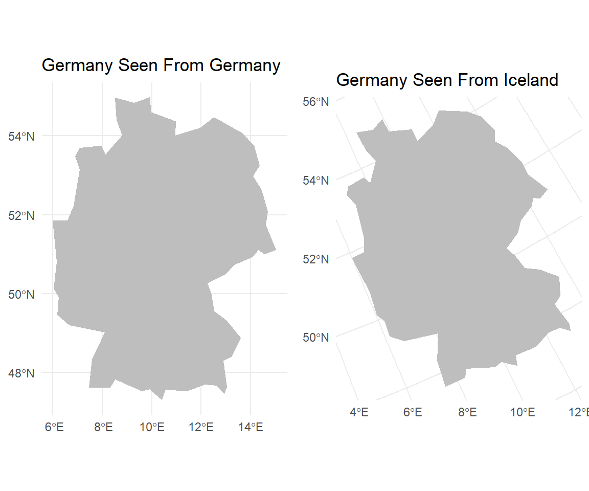
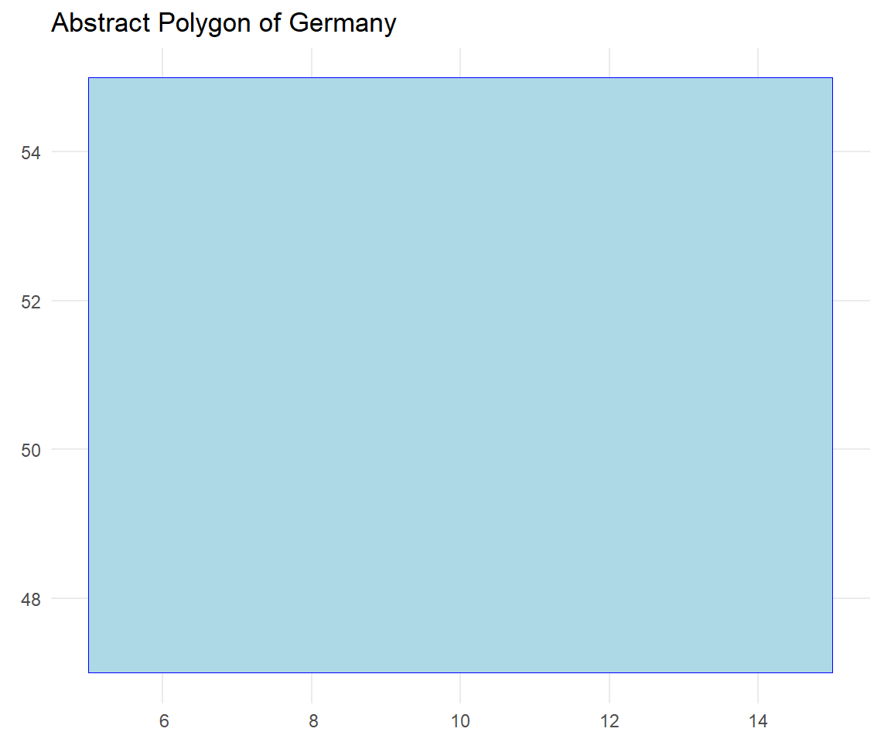
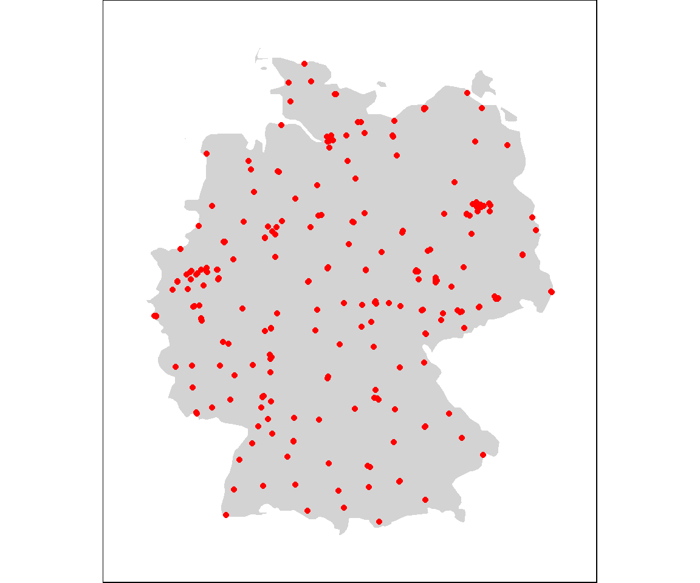

Chapter 7 Regression
![horse]()
This chapter introduces the workhorse of empirical research in the social science: Regression.
“As an undergraduate I studied economics, which meant I studied a lot of regressions. It was basically 90% of the curriculum (when we’re not discussing supply and demand curves, of course). The effect of corruption on sumo wrestling? Regression. Effect of minimum wage changes on a Wendy’s in NJ? Regression. Or maybe The Zombie Lawyer Apocalypse is more your speed (O.K., not a regression, but the title was cool).”
7.1 Old but Gold
Are older artists are better than younger artists? While experience and maturity can certainly contribute to an artist's skill and creativity, there are many factors that can influence the quality of an artist's work, such as natural talent, dedication, training, and access to resources. Is there an optimum age for artistic performance as compared to athletic performances which reaches a peak in youth? Do artists improve their skills and performance over an entire lifetime step-by-step such that the longer you live, the more you have time to practice? Does exceptional art happens randomly? Perhaps it takes time to become more well-known. You need time to travel and show or sell your art in different places. Thus when you produce "more art" you increase the chance to be discovered by the public or a patron? Have you ever heard of an artist who exactly created one piece of art?
There seems to be something to the story.
"Paul Cezanne died in October 1906 at the age of 67. In time he would be generally regarded as the most influential painter who had worked in the nineteenth century (e.g., Clive Bell, 1982; Clement Greenberg, 1993). Art historians and critics would also agree that his greatest achievement was the work he did late in his life."
What does better mean? In this chapter the research question is:
Definition
A research question is
- focused on a single issue,
- specific enough to answer thoroughly
- and feasible to answer within the given time frame or practical constraints
- not to mention relevant to your field of study.
But what exactly is productivity and how can we measure it? To keep things simple we follow the literature and measure productivity via auction prices for paintings. That's a very economic perspective on art.
Definition
Operationalization is the process of defining the measurement of a phenomenon that is not directly measurable.
This is what we gonna explore:
7.2 Data is everywhere
Researchers use auction price data for which they have to pay. We use free information from a Wikipedia List of most expensive paintings of all time. The auction prices are inflation-adjusted by consumer price index in millions of United States dollars in 2019. That's another interesting economic procedure, that we take for given at this analysis.
7.2.1 Data in a table
The table is created with the DT package in datatable format. This exploits the full potential of html documents, i.e. the data is searchable and sortable. The first rows are displayed, but in principle it can include the entire dataset.
Definition
Tabular data is common in data analysis. You can create a table in Word or Excel.
7.2.2 Data in a graph
Two continuous variables are plotted in a scatterplot. The x-axis is called abscissa and the y-axis is called ordinate.

Note that the axis beginning is not zero. The decision where axes start was made by the ggplot package for this data. Remember, every unit on the y-axis represents a million US dollars. Do we need to show the age between 0 and 20? How many famous artists died before 20 and sold paintings for a hundred million US dollars?
When It’s OK to NOT Start Your Axis at Zero.
When the data really don’t fluctuate very much but a rise of small values like 1.4 or 1.4% is a big deal. With a graph that starts at zero, these changes can't be detected. The data scientist has to decide.
7.2.3 The trend
The graph suggests a positive trend between price and age. There is an increase in price for older artists. The older the artist, the higher the auction prices.

7.2.4 The blackbox
The mission is to find a mathematical function that describes the trend. In other words, we are looking for the black box that transforms the input into the output:

Definition
A mathematical function is an expression, rule, or law that defines a relationship between one variable (the independent variable, on the x-axis) and another variable (the dependent variable, on the y-axis).
From looking at the graph, here are two suggestions:
\[\begin{align} \text{price} = 80 + 0.5 \cdot \text{age} \tag{Suggestion 1} \\ \text{price} = 90 + 0.2 \cdot \text{age} \tag{Suggestion 2} \\ \end{align}\]
Definition
A linear function is defined by two components, intercept (with the y-axis) and slope.

How can we compare the two suggested lines? Which linear function represents the relationship best?
7.2.5 Nobody's perfect
We all make mistakes. So do the linear functions:
\[ \begin{align} \text{price} &= 80 + 0.5 \cdot \text{age} \tag{Suggestion 1} \\ 102.5 &= 80 + 0.5 \cdot 45 \tag{Age for Holbein} \\ \end{align}\]
The equation tells (or predicts) that for any artist at the age of 45 it expects a auction price for a painting of 102.5 million US Dollar. Darmstadt Madonna was sold for 85 million US dollar. The linear function overestimated the true value. When you look at the graph, you see some predictions are more accurate (close to the true values) than others. All are either above or below the line.
Definition
A residual (or error) is the vertical distance between the actual and the predicted value.

7.2.6 Vocab Wrap-Up
Let's wrap up regression vocab! Find an equation that describes the phenomenon of interest. Equation I shows a generic statistical model; equation II a generic linear model.
\[ \begin{align} \text{outcome} &= f(\text{explanatory}) + \text{noise} \tag{I} \\ \text{outcome} &= \text{intercept} + \text{slope} \cdot \text{explanatory} + \text{noise} \tag{II} \\ \end{align} \]
A regression model is suggested by the researcher. A more concrete regression model looks like this:
\[Y = \beta_1 + \beta_2 X + \epsilon\]
A model can be easy or complicated. It definitely contains variables and parameters.
- Variables: Things that we measure (or have data).
- Parameters: Constant values we believe to represent some fundamental truth about the relationship between the variables.
The calculation is called an estimation. In textbooks the same equation can be found with hats:
\[ \widehat{Y} = \widehat{\beta}_1 + \widehat{\beta}_2 \cdot X \] \(\widehat{Y}\) are called the fitted or predicted values. \(\widehat{\beta}\) are regression coefficients (this is the estimate of the unknown population parameter). As we have seen in the graph before, the differences between the actual and the predicted values are the residuals \(e = Y - \widehat{Y}\).
The fitting procedure is called ordinary least squares (OLS).
7.3 For the truly dedicated
The overall goal is to make as little as possible mistakes! What kind of mistake? The deviation from the observed values! What could come to your mind is to minimize the sum of all errors:
\[\sum e \rightarrow \min\] But wait, there is more. Is it fair to say that the sum should be small? Compare The Scream and Meules, their deviations are \(+17.5\) and \(-13.6\) (very similar). So taken these two together, there's almost not mistake! That is to say, positive and negative deviations cancel each other out. Thus we need one more twist in the story:
\[\sum e^2 \rightarrow \min\] The goal of OLS is to minimize the residual sum of squares or the sum of squared residuals.
7.3.1 Algebra
Amazing Fact
Algebra comes from Arabic, meaning "reunion of broken parts".
Let's introduce matrix notation. We began with \(X\) and \(Y\) being variables in the equation:
\[Y = \beta_0 + \beta_1 X + \epsilon \]
We turn this into:
\[y = X \beta + \epsilon \] Capital letters like \(X\) represent a matrix (a table with rows and column), and small letters like \(y\) and \(e\) represent vectors. Since there are 6 observations and two parameters in our model we get:
\[ \begin{align} \begin{pmatrix} Y_1 \\ Y_2 \\ Y_3 \\ Y_5 \\ Y_6 \end{pmatrix} &= \begin{pmatrix} 1 & X_{11} \\ 1 & X_{12} \\ 1 & X_{13} \\ 1 & X_{14} \\ 1 & X_{15} \\ 1 & X_{16} \end{pmatrix} \begin{pmatrix} \beta_1 \\ \beta_2 \end{pmatrix} + \begin{pmatrix} \epsilon_1 \\ \epsilon_2 \\ \epsilon_3 \\ \epsilon_4 \\ \epsilon_5 \\ \epsilon_6 \\ \end{pmatrix} \end{align}\]
Let's turn to the goal, minizing the residual sum of squares (RSS). By convention, the normal version of a vector is a vertical list of numbers in big parentheses (i.e. a column vector). To transpose a vector means change between the row and column format. Squaring a vector thus means the row version of the vector times the column version of the vector:
\[\sum e^2 = e^T \cdot e \rightarrow \min\] Notice that the sum operator is gone. Matrix multiplication requires multiplying all elements pairwise with each other and summing them up. Plug in the residuals \(e = y - X \beta\) in the equation:
\[\begin{align} \sum e^2 &= e^T \cdot e \\ &= (y - X \beta )^T (y - X \beta) \tag{$(A+B)^T = A^T + B^T$}\\ &= (y^T - X^T \beta^T) (y - X \beta) \\ &= y^T y - y^T X \beta - X^T \beta^T y + X^T \beta^T X \beta \\ &= y^2 \underbrace{- 2 \beta^T X^T y}_{??} + \beta^2 X^2 \\ \end{align}\]
Did you notice what happened in the middle? The transpose of the first term is equal to the second:
\[\begin{align} (y^T X \beta)^T = y X^T \beta^T \end{align}\]
7.3.2 Analysis
Amazing Fact
From Medieval Latin, analysis means "resolution of anything complex into simple elements" (opposite of synthesis).
Next, we are ready to optimize. Optimization (in math and economics) is done by differentiation:
\[\begin{align} \frac{\partial RSS}{\partial \beta} &= -2 X^T y + 2 \beta X^T X = 0 \tag{first derivative = zero} \\ 2 \beta X^T X &= 2 X^T y \tag{rearrange terms}\\ \beta X^T X &= X^T y \tag{the "normal equation"} \\ \beta &= (X^T X)^{-1} X^T y \tag{Bam}\\ \end{align}\]
Those \(\beta\) coefficients are the first and most important regression results. Retrieve them step by step to enhance your understanding of the math and coding as the same time.
7.3.3 Take the Long Way Home
First, retrieve matrix \(X\) from the data set:
Second, the transpose of \(X\) has two rows and six columns (use t()):
Next, calculate the square of the matrix (transpose times original):
The inverse of the matrix product can be calculated by solve():
Next, multiply the inverse with the transpose from the right:
solve(t(X)%*%X) %*% t(X)
#> [,1] [,2] [,3] [,4] [,5]
#> [1,] -0.78222656 -0.513671875 0.506835938 1.68847656 -0.191406250
#> [2,] 0.01293945 0.009277344 -0.004638672 -0.02075195 0.004882813
#> [,6]
#> [1,] 0.291992188
#> [2,] -0.001708984Finally, multiply the vector \(y\):
It's the \(\beta\) vector! The first entry is the intercept and the second is the slope of the linear function. The following graph shows the line created from intercept and slope in a scatter plot.
7.4 Survival of the Fittest Line
The linear equation that best describes the data is this:
\[Price = 22.3452 + 1.1657 \cdot Age\]

7.5 On the Shoulders of Giants
Fortunately, we are standing on the shoulders of giants. Clever people implemented the linear regression (command lm()) and all kinds of regressions and statistical tests in R.
lm(Price ~ Age.at.Death, data = artists)
#>
#> Call:
#> lm(formula = Price ~ Age.at.Death, data = artists)
#>
#> Coefficients:
#> (Intercept) Age.at.Death
#> 22.345 1.166The workhorse packs up work.